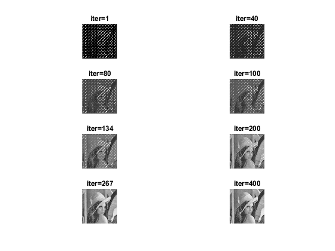

Contents
clear all;
close all;
ouverture image
im = imread("lena.png");
imshow(im);
title("Color image")
figure();
im = rgb2gray(im);
imshow(im);
title("Original image");
convolution
figure();
mask = ones(3,3);
imconv = conv2(im, mask, 'same');
max_ = max(max(imconv));
imconv = 255*(imconv/max_);
imconv = uint8(imconv);
imshow(imconv);
title("After convolution")
translation
figure();
transl_list = [ [2,0] ; [0,2] ;[1,1]];
nb_img = size(transl_list)
nb_img = nb_img(1)
translated_images = {}
for i=1:nb_img
translated_images{i} = imtranslate(imconv,transl_list(i ,:));
subplot(nb_img,1,i);
imshow(translated_images{i})
title(["Translated image " int2str(i)])
end
nb_img =
3 2
nb_img =
3
translated_images =
0×0 empty cell array
downsampling
figure();
step = 4 ;
size_ = size(im);
down_sampled_images = {}
for i=1:nb_img
down_sampled_images{i} =translated_images{i}(1:step : size_(1), 1:step:size_(2));
subplot(nb_img,1,i);
imshow(down_sampled_images{i})
title(["Downsampled image " int2str(i)])
end
down_sampled_images =
0×0 empty cell array
adding noise
noisy_images = {}
for i=1:nb_img
noisy_images{i} =imnoise(down_sampled_images{i}, 'gaussian', 0 , 0.001);
subplot(nb_img,1,i);
imshow(noisy_images{i})
title(["Noisy image " int2str(i)])
imwrite(noisy_images{i}, ['noise_im' int2str(i) '.png'])
end
noisy_images =
0×0 empty cell array
matrix mask
shape = size(noisy_images{1})*step;
mask = zeros(shape);
im_sum = zeros(shape);
mask1 = zeros(shape);
mask2 = zeros(shape);
mask3 = zeros(shape);
mask_list = {mask1,mask2,mask3}
im_sum_list ={}
for i=1:nb_img
mask_list{i}(1:step : size_(1), 1:step:size_(2)) = 1;
mask_list{i} = imtranslate(mask_list{i},transl_list(i ,:));
im_sum_list{i} = mask_list{i} ;
im_sum_list{i}(im_sum_list{i}>0.5) = noisy_images{i};
end
for i=1:nb_img
im_sum = im_sum + double(im_sum_list{i});
end
mask = or(mask_list{1}, or(mask_list{2} , mask_list{3}));
figure();
imageplot(im_sum);
title('Sum of the existing pixels')
figure();
imshow(mask);
title('Mask')
imwrite(uint8(im_sum), 'degraded_lena.jpg');
imwrite(mask, 'mask.png')
mask_list =
1×3 cell array
{512×512 double} {512×512 double} {512×512 double}
im_sum_list =
0×0 empty cell array
filling the holes v1
y = imread('degraded_lena.jpg');
addpath('toolbox_signal');
addpath('toolbox_general');
mask = imread('mask.png');
Gamma = mask;
Pi = @(f)f.*(1-Gamma) + double(y).*Gamma;
Delta = @(f)div(grad(f));
lambda = .1;
niter = 500;
E = [];
k = 1; ndisp = [1 5 10 niter];
norm1 = @(f)norm(f(:));
f = double(y);
for i=1:niter
E(i) = norm1(grad(f));
f = Pi( f + lambda*Delta(f) );
if i==ndisp(k)
imageplot(f, ['iter=' num2str(i)], 2, 2, k);
k = k+1;
end
end
figure;
subplot(1,2,1);
imageplot(f)
subplot(1,2,2);
imageplot(double(y));
figure;
plot(E); axis('tight');
set_label('Iteration #', 'E');
figure;
imwrite(uint8(f), 'new_impainted_lena.jpg')
imageplot(f);
title("Inpainted image")
filling the holes v2
y = imread('degraded_lena.jpg');
addpath('toolbox_signal');
addpath('toolbox_general');
mask = imread('mask.png');
Gamma = mask;
Pi = @(f)f.*(1-Gamma) + double(y).*Gamma;
epsilon = 5;
Amplitude = @(u)sqrt(sum(u.^2,3)+epsilon^2);
Neps = @(u)u./repmat(Amplitude(u), [1 1 2]);
tau = epsilon/4;
G = @(f)-div(Neps(grad(f)));
niter = 400;
J = [];
k = 1; ndisp = ceil(niter*[.001 1/10 1/5 1/4 1/3 1/2 2/3 1]);
f = double(y);
for i=1:niter
J(i) = sum(sum(Amplitude(grad(f))));
f = Pi( f - tau*G(f) );
if i==ndisp(k)
imageplot(f, ['iter=' num2str(i)], 4, 2, k);
k = k+1;
end
end
figure;
subplot(1,2,1);
imageplot(f)
subplot(1,2,2);
imageplot(double(y));
figure;
plot(J);
axis('tight');
set_label('Iteration #', 'J_\epsilon');

deconvolution
addpath('toolbox_signal');
addpath('toolbox_general');
img = imread('new_impainted_lena.jpg');
deconvoled_im_list ={}
s=3;
N= 512;
b=ones(s,s)/s^2;
B=fft2(b,N,N);
BF=find(abs(B)<1);
B(BF)=0.5;
hF=ones(N,N)./B;
y_true = imread('lena.png');
y_true = rgb2gray(y_true);
yF = fft2(img);
n_iter = 1000;
SNR_list = zeros(n_iter,1);
for lambda_=1:n_iter
lambda = lambda_ /n_iter;
fL2 = real( ifft2( yF .* hF ./ ( abs(hF).^2 + lambda) ) );
snr(double(y_true),fL2);
SNR_list(lambda_)= snr(double(y_true),fL2);
end;
figure;
plot(SNR_list); axis('tight');
set_label('LAMBDA 1e3', 'SNR');
[argvalue, argmax] = max(SNR_list);
lambda = argmax/n_iter
fL2 = real( ifft2( yF .* hF ./ ( abs(hF).^2 + lambda) ) );
figure;
imageplot(fL2);
title('Final lena')
deconvoled_im_list =
0×0 empty cell array
lambda =
0.0780